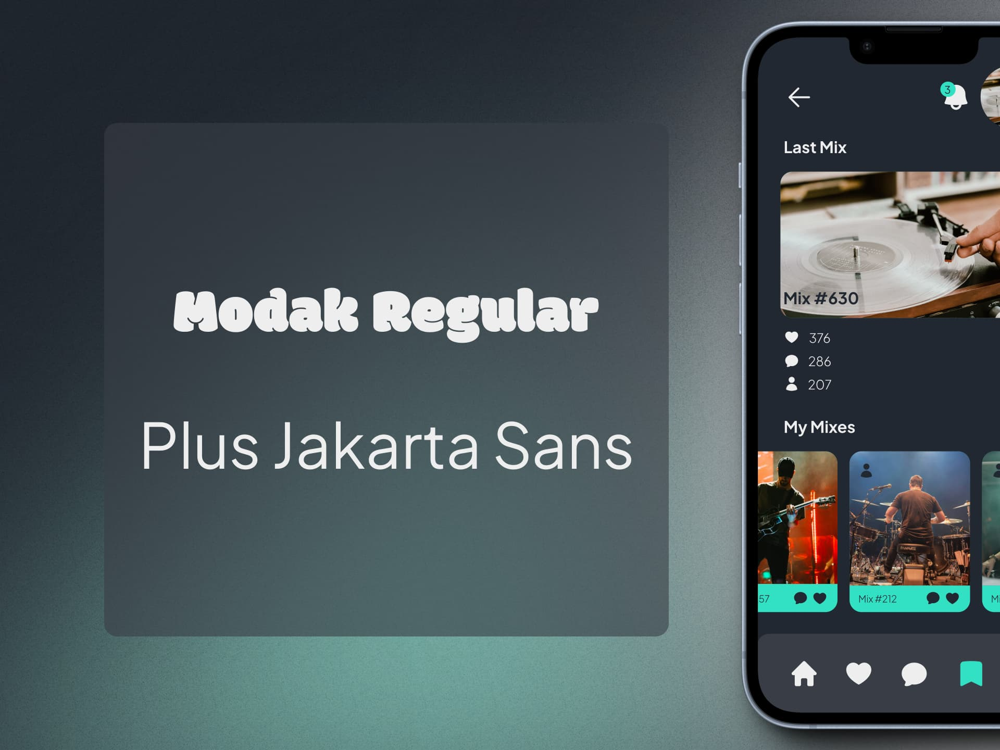

Cymbal Clap Project
Web Design | UI/UX Design | Interface Design | Mockups & Wireframes
Cymbal Clap Project is a fictional project with a musical theme.
Company description:
- Name: Cymbal Clap.
- Target audience: People between 23 and 35 years old who are passionate about music and social interaction.
Cymbal Clap is a company that is dedicated to the management of a mobile
application with an interesting proposal. Its application works as a social network focused on music. Through this platform,
users can share their musical tastes, follow their favorite artists and discover new music.
Project objectives:
- Create an in-app music player that allows users to listen to their favorite songs.
- Inspired by Genius, offer contextual information about the songs, such as lyrics, trivia and facts about the artists.
Key features:
1. Musical Social Network: The Cymbal Clap app
allows users to connect with other music lovers. They can share their favorite songs, create playlists, and comment on tracks they like.
2. Integrated Player: A distinctive feature of the application is its integrated
music player. Users can listen to songs directly within the app without needing to switch to other music playing apps.
This makes the music discovery and playback experience easier.
3. Share Music: In addition to listening to music, users can share the songs
they are listening to with their followers. This creates an active community around music and encourages interaction between users.
4. Follow Artists: Users can follow their favorite artists and receive updates
about their releases, concerts and news. This helps keep fans informed and connected to the music scene.
Contextual information:
- When playing a song, show relevant details
- Songs lyrics.
- Data about the artist (biography, discography, collaborations).
- Curiosities or anecdotes related to the song or the artist.
Design and user experience:
1. Attractive Design:
- Visually pleasing and easy to navigate interface.
- Iconography related to music and community.
2. Customization:
- Customizable user profiles with photos, biography and music preferences.
- Configuration options to tailor the experience to individual preferences.
In short, Cymbal Clap has created a platform that combines the passion for
music with social interaction. Its focus on the music community and player integration make the app attractive to
music lovers around the world.
This briefing focuses on the integrated player and social interaction, key elements for the success of
the Cymbal Clap application.
Photographs Used:
victrola-record-players-R4Rdi0EfBws-unsplash by Victrola Record Players
jakob-rosen-KA1WM_yQGF8-unsplash by Jakob Rosen
matthew-deltoro-DonSpfCNjQY-unsplash by matthew deltoro
luis-morera-PcxxyiM6FLg-unsplash by Luis Morera
alfonso-scarpa-2LGx4cQAMks-unsplash by Alfonso Scarpa
They can all be found on Unsplash, many thanks to the artists.

